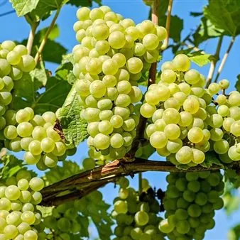

da sab 3 ott a dom 4 ott · dalle 10:00
Vigneti Aperti FVG 2026: 3-4 ottobre
Vigneti Aperti è la nuova iniziativa del Movimento Turismo del Vino, che invita a scoprire la natura delle aziende vitivinicole di tutta Italia. Cantine partecipanti 3-4 ottobre PROVINCIA UDINE Dario Coos - Nimis (UD) Sabato 18 luglio Dalle 10.00 alle 18.00 Durante la visita…
 Indicazioni
Indicazioni
- Costi e prenotazioni
- Costo non indicato · Prenotazione non indicata
- Programma
- Programma da verificare. Apri la fonte ufficiale per orari e possibili aggiornamenti.
- In caso di maltempo
- Nessuna indicazione specifica pubblicata.
- Note
- Acquisito automaticamente dalla fonte.
L’EVENTO
Descrizione completa
Vigneti Aperti è la nuova iniziativa del Movimento Turismo del Vino, che invita a scoprire la natura delle aziende vitivinicole di tutta Italia.
Cantine partecipanti 3- 4 ottobre
Spolert Winery - Prepotto (UD)
Sabato 3 e domenica 4 ottobre
Dalle ore 11 alle ore 19
A Prepotto, nel cuore dei Colli Orientali del Friuli, Spolert apre le porte con due modi diversi di vivere la stessa collina. Aperitivo nel giardino panoramico Il nostro giardino si affaccia direttamente sui filari: ci si siede, si ordina un calice e un tagliere di salumi e formaggi del territorio, e si lascia che il pomeriggio scorra. Nessuna fretta, nessun percorso obbligato — solo il tempo di guardare i vigneti mentre la luce cambia sulle colline. Degustazione guidata dei vini Per chi vuole andare più a fondo, la degustazione accompagna nei vini dell'azienda: i bianchi dei Colli Orientali e lo Schioppettino di Prepotto, il rosso autoctono nato proprio qui e tornato a vivere su queste colline. A raccontarli è chi li produce, con calma e senza formalismi. Che scegliate mezz'ora di sosta o un pomeriggio intero, l'invito è lo stesso: salire fin quassù, sedersi e assaggiare il paesaggio.
Grillo Iole - Prepotto (UD)
Dalle ore 10 alle ore 20
Due tipi di Degustazioni a scelta, visitate il loro sito per scegliere quella giusta per ognuno di voi. https://grilloiole.it/
Vigna Lenuzza - Prepotto (UD)
Vivi l’anima di Prepotto nella nostra cantina! Ti proponiamo due modi per scoprire i nostri sapori: Wine Tasting Experince: 5 vini della casa e 5 abbinamenti locali sorprendenti.
Per maggiori informazioni consulta il nostro sito www.vignalenuzza.it
Aquila del Torre – Povoletto (UD)
Tema: Weekend con Chef Masaru
Programma: Dopo l'entusiasmo e il successo della prima edizione, Chef Masaru torna ad Aquila del Torre per guidarci in un'esperienza enogastronomica memorabile: un ponte sensoriale dove le radici del Friuli riaffiorano nella poesia e nella tecnica della grande cucina nipponica. Ad accompagnare l'incontro tra la cultura friulana e quella nipponica ci saranno il maestro Paolo Cotrone e Gaia Rossella Sain che ci faranno immergere nella terra del Sol Levante attraverso la musica folkloristica giapponese suonata dal vivo!
Sabato 3 ottobre 2026 – ore 12:00
Domenica 4 ottobre 2026 – ore 12:00
Prezzo : 70 euro adulti e 50 euro i bambini
Durata 3 ore
Prenotazione obbligatoria tramite il sito ufficiale di Aquila del Torre su https://aquiladeltorre.it/wine-experience/ Per informazioni o chiarimenti potete mandare una mail a vino@aquiladeltorre.it o chiamando il numero 0432 666428
Vie Sedean 80 – Codroipo (UD)
Dalle ore 10 alle 19
Visita dei vigneti e degustazione in cantina.
Tenuta Valdomini - Attimis (UD)
Passeggiata tra le vigne accompagnati da alcuni simpatici animali della Tenuta; verrà deciso quali al momento, tra Caprette, Pecore, Asini, ... quindi degustazione di tre vini con piatto di salumi e formaggi locali. Ritrovo ore 11 del 3 Ottobre.
Prezzo 45 euro per persona solo sabato mandare WhatsApp 3428501981 POSTI LIMITATI
PROVINCIA DI GORIZIA Borc da Vila - Romans d’Isonzo (GO)
Orario su prenotazione con visita ai locali della villa settecentesca e parco secolare, degustazione di quattro vini con prodotti tipici di alta qualità, 20 € a persona minimo quattro persone.
Tenuta Borgo Conventi - Farra d’Isonzo
Orari: 11, 14 e 16.
Visita in cantina e in barricaia, degustazione 3 vini. Prenotazione obbligatoria tramite email: visite@borgoconventi.it oppure tramite whatsapp: 3409588631 Ioana. Costo persona: 15 euro. PROVINCIA DI TRIESTE
Ivana Stubelj - San Pelagio (Trieste)
Dalle ore 10:00 alle 21:00
Cogliete l'opportunita' di degustare quattro varieta' dei nostri vini con l'abbinamento a tre tipologie di oli extravergini di oliva e olive di nostra produzione, due tipologie di formaggi e salumi di alta qualita', all'aria aperta o nella sala di degustazione.
Su prenotazione .
IL PROGRAMMA
Programma e orari
Appuntamenti raccolti dalle fonti elencate. Dove manca un orario, non è ancora disponibile in questa scheda.
Programma pubblicato
- Dal 2026-10-03 al 2026-10-04
INFORMAZIONI UTILI
Prima di partire
- Controllare la fonte prima di partire.
ORGANIZZAZIONE